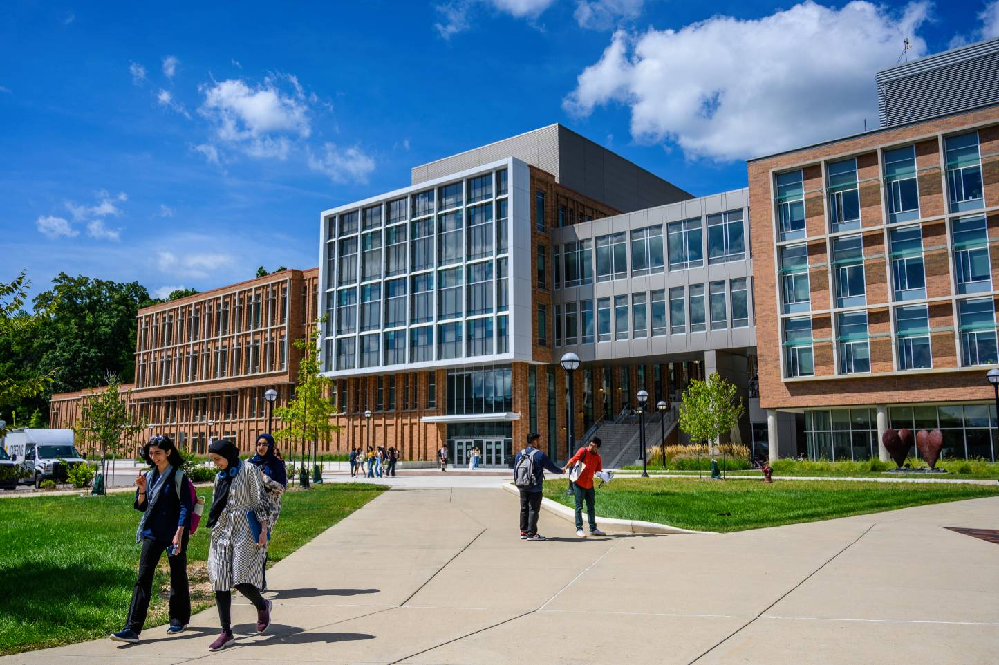

Upcoming Networking Events
Campus Connections: Student Engagement and Networking Fair
Date: Thursday, Aug 28, 2025 | 11:00 AM - 1:00 PM
Location: Dow Room | 4320 Leinweber Building
Description:
Connect with on-campus employers recruiting for internships, part-time roles, and full-time positions! Attend the Campus Connections: Student Employment & Networking Fair to
- discover new opportunities at the University of Michigan
- build & strengthen your networking skills by connecting with on campus employers
- recruit for internships, part-time roles, and full-time positions
- network for future opportunities
Build a Strategic Networking Plan
Building a List for Strategic Networking
Identify a list of target organizations for strategic networking before you start to apply for jobs or interviews.
The LAMP list can help you organize this information. It should have 5 columns. One to list your 40 target companies, one for alumni from said companies, one detailing your motivation, and one for postings at that company.
An example spreadsheet can be found here
Outreach Messages
Your next step should be to reach out to peers, alumni, and professionals.
Steve Dalton’s The 2-Hour Job Search promotes a 5-point email as an effective message for networking.
- Keep it short! Try to keep it to 100 words or less
- No mention of jobs/internships in subject or body
- Connection goes first (e.g. UMSI connection)
- Generalize your interest - make it easy for them to respond
- Maintain the control of the follow up. This gives you permission to follow up once
Find more details about this process and email examples in our Networking Outreach Email Examples document
Planning an Informal Interview
After reaching out to people of interest in your field it’s time to build a connect with them!
Informational interviews are a great way to gain information about companies, gain career advice, and strengthen the relationships in your network!
One way you can go about doing this is the TIARA method outlined in our Informational Interviews Using TIARA Slides
Career Fair Preparation
Your next step should be to attend a career fair and talk to potential employers!
But before you go it’s best to prepare so you can make the most of the opportunity.
Some things to prepare:
- A professional outfit - Your aim at a career fair is to make a good first impression on employers, and attire is an essential aspect of that. Professional attire such as suit jackets, blazers, and dress shoes are great choices for a formal look.
- An elevator pitch - An elevator pitch should be a quick 1 minute speech detailing your experience. It helps you make a strong first impression and communicates value you'd bring to the company
- Resume copies for potential employers - Have copies of your resume to hand out to potential employers so they can follow up with you.
Learn more tips on what to expect at a Career Fair and how to prepare in our Career Fair Prep Slides